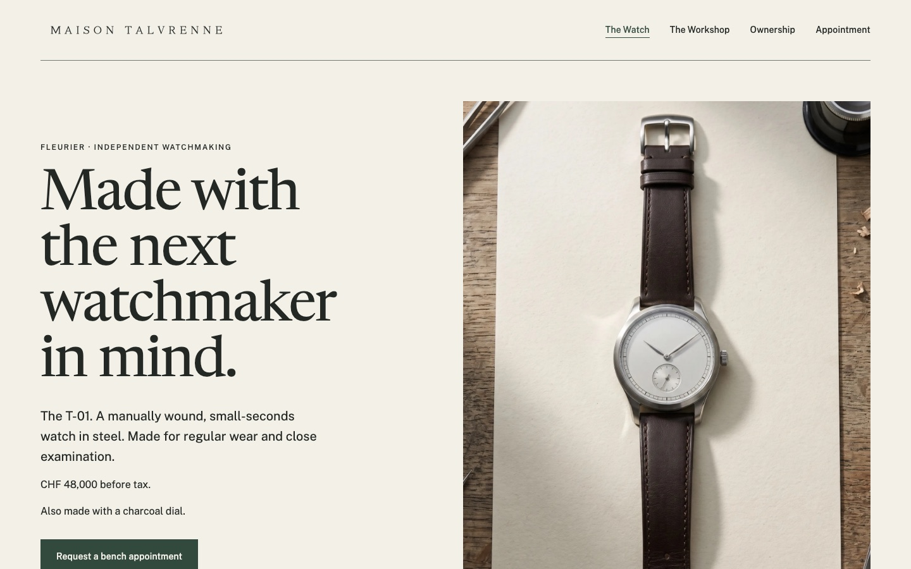
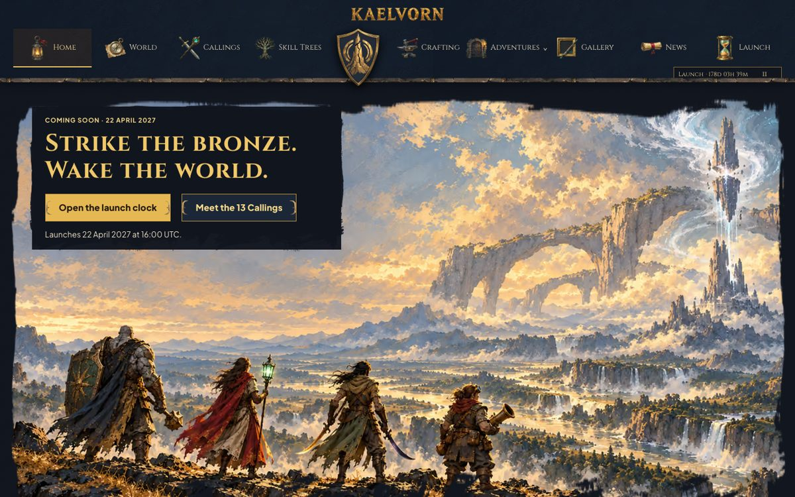

Demos
The skills, at work
Real runs of the skills in Fullstack-Rocks/skills, with everything they made. The code lives in the repository; the demos live here.

delegate · Maison Lumen
Claude Code hands an invented luxury agency's work to Antigravity, Codex, Claude Opus 5.5 and Grok: 31 runs, from research to three finished websites.

delegate · Kaelvorn
Claude Code hands an invented MMORPG's coming-soon site to Codex, Antigravity, Cursor (GPT-5.6 Sol and Grok 4.7) and the Gemini API, then redesigns it to match its painted concepts from a delegation plan: 61 runs, from naming and art direction to a 37-page site with a painted logo, crown moulding and brush-edged art.
The Kaelvorn benchmark: what each agent and the orchestrator cost, in both stages